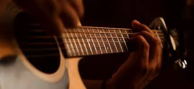
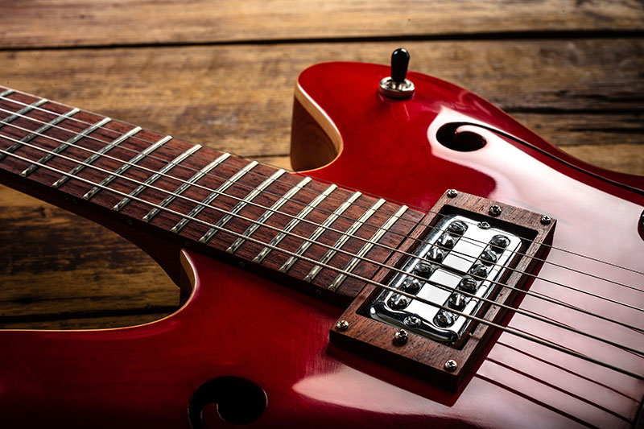
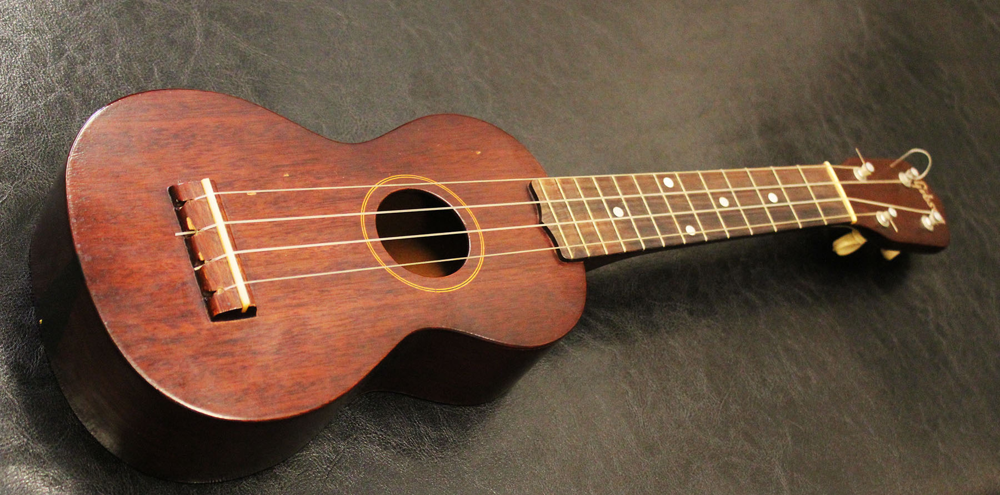
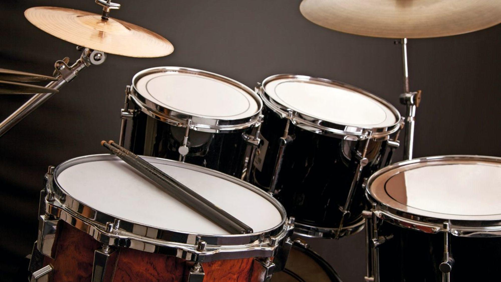

Guitarra acústica
Guitarra eléctrica
Ukelele

Violín

Piano
Batería
| Test | Cursos | Redes |
| Dirección | ||
|---|---|---|
| Centro Artístico, Privada 20 #718, entre CTM y Tabasco | ||
| ♥ | ||
| Nombre del curso | Objetivo del curso | Fecha |
|  Guitarra acústica |
Conocer e interpretar obras de diversas épocas y estilos, desarrollar hábitos de estudio valorando el rendimiento en función del tiempo empleado, relacionar los conocimientos adquiridos de lectura y escritura musicales con la práctica de la Guitarra Acústica. | Lunes y Miércoles de 2:00pm a 3:00pm |
|  Guitarra eléctrica |
Transmitir las Nociones Elementales para la ejecución de dicho instrumento a través de los Géneros Populares más reconocidos como Blues, Rock, Pop, Bossa Nova, Jazz entre otros, utilizando Técnicas, conceptos de ejecución y elementos esenciales de Lecto-escritura Musical,práctica individual y trabajo de Ensamble, entre algunas Asignaturas. | Martes y Jueves de 5:00pm a 6:00pm |
|  Ukelele |
Conocer el ukelele, como su historia, tipos, partes y afinación, aprender a leer diagramas, tablaturas y partituras, Ponocer y practicar acordes principales, rasgueos y arpegios básicos, practicar conceptos específicos del lenguaje musical en un repertorio nivelado según dificultad, conocer propuestas didácticas, metodologías, recursos y herramientas para aplicar el ukelele de forma práctica, conocer recursos adecuados a los diferentes niveles y necesidades específicas de aprendizaje para facilitar el conocimiento de los conceptos básicos o complejos, ofrecer ideas, recursos y herramientas al docente para un correcto uso del ukelele en el aula. | Miércoles, Jueves y Viernes de 1:00pm a 2:00pm |
Violín |
Explorar todos los recursos que provee la música en una forma de enseñanza que prevalezca en el desempeño artístico-musical de cada alumno, con ejercicios que desarrollen la coordinación, fluidez, afinación e independencia. | Viernes y Jueves de 4:00pm a 5:00pm |
Piano |
Mejora tu coordinación, aumenta tu capacidad auditiva, mejora tu capacidad lectora, tocar el piano mejora tu destreza con las matemáticas. | Lunes, Martes y Miércoles de 3:00pm a 4:00pm |
|  Batería |
Estimular la sensibilidad del alumno mediante actividades en las que descubra, explore y experimente sus posibilidades expresivas, de una manera lúdica, con ejercicios que desarrollen la coordinación, musicalidad, tiempo interno e independencia. | Martes y Mié 12:00pm a 1:00pm |